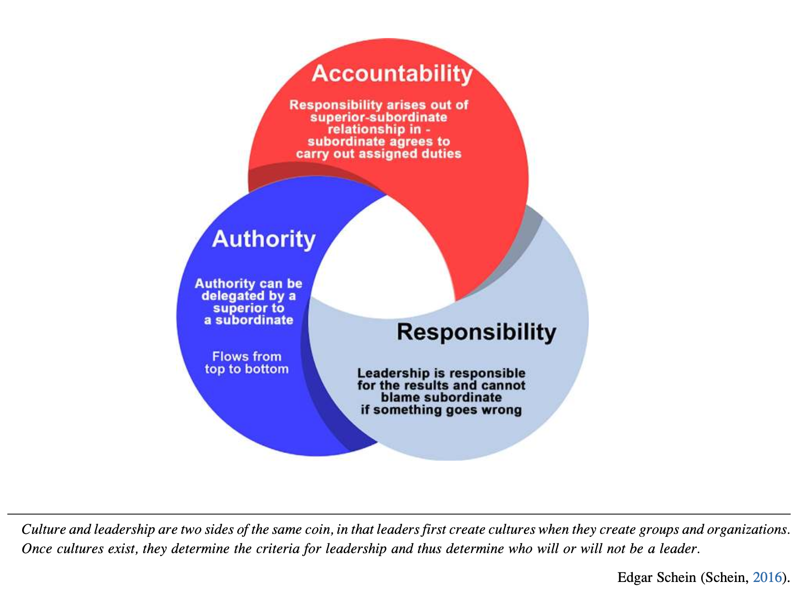

Chapter 7: Evaluating Leadership and the Safety Culture
📌 0. 챕터 개요 & 핵심 명제

• 에드가 샤인(Edgar Schein, 2016)의 명제: "문화와 리더십은 동전의 양면이다. 리더가 집단과 조직을 만들 때 먼저 문화를 창조하고, 일단 문화가 형성되면 그 문화가 리더십의 기준을 규정하여 누가 리더가 될 것인지 결정한다."
• 핵심 삼원조(Triad) 상호작용 구조:
- 책무성 (Accountability - 붉은색): 상사-부하 관계에서 파생되며, 부하는 직무 수행을 수락하고 결과에 대해 해명할 의무를 가짐.
- 권한 (Authority - 짙은 파란색): 상사가 부하에게 합법적으로 위임할 수 있으며 상향에서 하향(Top to bottom)으로 흐름.
- 책임 (Responsibility - 연한 청색): 궁극적 책임은 리더십에 잔류하며, 실패 시 부하에게 책임을 전가할 수 없음.
📖 1. 도입 (INTRODUCTION)
안전보건 전문가는 현장에서 '관리자(Manager)'와 '리더(Leader)'의 역할을 유연하게 교대하며 수행해야 합니다. 두 역할의 균형이 무너지면 조직은 생존할 수 없거나 관료주의에 매몰됩니다.
관리자와 리더의 역할 비교 분석
| 구분 | 관리자 (Manager) | 리더 (Leader) |
|---|---|---|
| 접근 방식 | 환원주의적(Reductionist) 접근: 문제를 기본 요소들로 쪼개어 세밀하게 분석하고 해결책 도출 | 시스템적/전체론적(Holistic) 접근: 조직의 모든 부서와 기능이 어떻게 조화롭게 협력해야 하는지 전체 구조 조망 |
| 주요 과업 | 안전 프로세스의 실제 실행 및 운영, 절차 준수 관리 | 안전경영시스템(SMS)의 비전과 미션 제시, 직원의 안전문화 동기부여 및 영감(Inspiration) 부여 |
| 조직 지속성 | 단기 생존은 가능하나, 장기적으로 관료주의에 빠져 원래의 비전과 미션을 상실하기 쉬움 | 항상 프로세스 전반과 본질적 방향성에 조직의 초점을 맞추도록 이끎 |
제7장 핵심 학습 목표 (8가지)
- 리더십의 정의에 대한 이해: 리더십의 방대한 정의와 본질적 속성 체득
- 안전 전문가의 리더십 인정 방안: 조직 내에서 단순 기술자가 아닌 '리더'로 수용되는 방법 검토
- 리더십이 안전경영시스템(SMS)에 미치는 영향: 경영진의 태도와 의사결정이 안전문화에 미치는 파급력 분석
- 책임, 권한, 책무성의 상호연관성: 세 개념의 분리 불가능한 유기적 작동 원리 이해
- 위임(Delegation)이 안전 프로세스에서 배제되어 온 이유: 전통적 안전 관리의 위임 한계 규명
- 책무성과 책임의 필수성: 안전경영시스템 지속 및 문화 유지의 불가결한 기초임을 증명
- 서면 직무기술서(Job Descriptions)의 중요성: 업무 범위 명시의 장단점 및 리더십 발휘 연계
- 성과에 대한 결과/피드백(Consequences) 설정 필요성: 긍정적 보상과 공정한 제재의 균형 확립
🧭 2. 리더십의 정의 (LEADERSHIP DEFINED)
리더십은 단 하나의 문장으로 규정하기 어렵지만, 학습과 훈련을 통해 누구나 발전시킬 수 있는 기예(Art)입니다.
- 정의의 다양성: 스톡딜(Stogdill, 1974)은 "정의하려 시도한 사람 수만큼이나 정의가 많다"고 하였고, 베니스(Bennis & Townsend, 1995)는 20세기 말 문헌 기준으로 최소 650개 이상의 리더십 정의가 존재한다고 밝혔습니다.
- 직관적 속성: "리더십은 보면 안다(Leadership is something you know when you see it)"는 말처럼, 리더는 집단 전면에 당당히 서서 무엇을 어떻게 달성할지 명확히 소통하고 공유된 비전(Shared vision)을 향해 이끄는 사람입니다.
- 가시적 존재감(Visible Presence): 리더의 현장 가시성과 솔선수범 행동은 시스템 정착의 필수 전제인 상호 신뢰(Trust)를 형성합니다.
안전 전문가의 다단계 역할 전환: 작업위험성평가(JHA) 사례
🎖️ 3. 리더십 원칙 (PRINCIPLES OF LEADERSHIP)
표 7.1: 리더십 기대 요소 (미 육군 야전교범 FM 6-22)
| 번호 | 리더십 기대 역량 (FM 6-22, 2015) | 안전문화 실무 적용 |
|---|---|---|
| 1 | 비전을 수립하고 변화를 주도하라 (Have a vision and lead change) | 안전 비전 제시 및 안전 프로세스 혁신 주도 |
| 2 | 조직의 도덕적·윤리적 나침반이 되어라 (Be moral and ethical compass) | 이익 앞에서도 타협하지 않는 생명 존중 윤리 견지 |
| 3 | 학습하고, 사고하며, 적응하라 (Learn, think, and adapt) | 새로운 위험 요인과 규제 환경에 기민한 대응 |
| 4 | 위험과 기회의 균형을 맞춰 주도권을 유지하라 (Balance risk and opportunity) | 위험을 합리적으로 제어하며 안전 주도권 확보 |
| 5 | 민첩하고 효과적인 고성과 팀을 구축하라 (Build agile, high-performing teams) | 부서 간 경계를 넘어 협력하는 안전위원회 운영 |
| 6 | 부하에게 권한을 위임하고 리스크를 감수하라 (Empower subordinates & underwrite risk) | 현장 자율권 부여 및 발생 가능한 오류를 리더가 감당 |
| 7 | 대담하고 적응력 있는 리더를 육성하라 (Develop bold, adaptive leaders) | 현장 작업자를 차세대 안전 리더로 지속 육성 |
| 8 | 전방위로 소통하고 전체 맥락을 투명하게 공유하라 (Communicate; tell whole story) | 상하좌우 투명한 소통 및 왜곡 없는 위험 공유 |
오마 브래들리(Omar Bradley) 장군의 리더십 균형론
"리더십은 가혹함이 아닌 확고함(firmness), 나약함이 아닌 이해심(understanding), 이기심이 아닌 관용(generosity), 독선·오만이 아닌 자긍심(pride)을 의미한다." 정직한 실수(Honest mistakes)와 딜레마를 겪는 것은 리더십의 기예를 배우는 필수 과정입니다.
유독성 리더십(Toxic Leadership)의 경계
• 원인: 비대해진 자아도취(Inflated self-worth)와 극단적 사리사욕(Acute self-interest).
• 행태: 기만(Deceive), 위협(Intimidate), 강압(Coerce), 부당한 처벌(Unfair punishment)을 일삼음.
• 안전문화 결과: 지위 권력에만 의존하여 단기 요구만 억누르므로 직원의 주도성과 사기를 파괴하고 사건 은폐 문화를 조장합니다.
⚡ 4. 리더십에 관한 고찰 (THOUGHTS ON LEADERSHIP)
미국 에너지부(DOE, 2009) 고위험 산업 핸드북은 공식 직책과 무관한 '실질적 리더십(Actual Leadership)'의 중요성을 강조합니다.
공식 관리자(Manager)와 현장의 실질적 리더(Actual Leader)
부서 관리자는 법적 권한과 책임을 갖고 있을 수 있지만, 현장에서 사람들에게 영감을 주고 실제 안전 행동을 견인(Inspiring and driving behavior)하는 사람은 팀 리더(조장·반장), 노동조합 대의원(Union steward), 숙련 라인 작업자 등 현장의 비공식 리더일 수 있습니다. 안전 전문가는 이들을 파악하여 안전문화의 핵심 동반자로 삼아야 합니다.
🔄 5. SMS에 미치는 영향 (LEADERSHIP IMPACT ON SMS)
직원들은 리더십 팀을 바라보며 자신의 업무에서 의미(Meaning), 목적(Purpose), 방향(Direction), 통찰(Insight)을 찾습니다.
- 리더가 모든 직무에 목적이 있음을 보여주고 미래 방향을 공유하면 ➔ 직원들은 더 큰 개인적 책임감(Greater personal responsibility)을 갖고 자발적으로 안전 활동에 헌신합니다.
- 리더십 자질이 보이지 않으면 ➔ 직원들은 소극적으로 변하고 위험 개선에 참여하지 않습니다.
현대적 리더십: 상호작용적 영향력 (Silva, 2016)
"리더십이란 특정 맥락(Context) 속에서, 일부 사람들이 공통의 목표를 달성하기 위해 누군가를 자신들의 리더로 수용할 때 발생하는 '상호작용적 영향력의 과정(Process of interactive influence)'이다."
🏢 6. 리더십과 조직 구조 (LEADERSHIP & ORG STRUCTURE)
James의 현장 관찰: M&A 통합과 전화 회신(Call-back) 테스트
다공장 인수합병 환경에서 안전 전문가 James는 변화를 성급히 추진하기 전, 조직의 고유한 전통과 은어를 먼저 관찰했습니다. 특히 운영 관리자들에게 전화를 걸어 "누가 얼마나 신속하게 전화를 회신하는가"를 관찰했습니다. 즉각 회신한 리더들은 변화에 저항하지 않고 새로운 조직 문화를 적극 수용하는 훌륭한 팀 플레이어였습니다.
경영진이 조직에 긍정적 신호를 보내는 7대 행동 지침
- 작업 전 안전점검(Preshift review), 주간/월간 회의에 직접 가시적으로 참여함
- 전 직원과 열린 양방향 소통을 유지하고 위험 보고 장벽을 완화·제거함
- 손실을 유발하는 불안전한 활동과 상태(Loss-producing activities)를 신속히 시정함
- 부서 및 경영 회의 안건에 안전경영시스템(SMS) 정보를 일상적으로 상정함
- 신규 입사자 교육 및 직무 교육에 안전 기준을 온전히 통합 반영함
- 손실 전(Pre-loss, 선행)과 손실 후(Post-loss, 후행) 데이터를 모두 추적하되 선행지표에 중점을 둠
- 안전 이슈와 위험 요소에 대한 현장의 모든 우려를 진지하게 수용함
선행지표 vs 후행지표의 균형 (DOE, 2009)
• 후행지표 (Lagging Indicator): 이미 일어난 결과나 성과(Results/Outcomes) 측정 (예: 재해율, 손실 작업일수).
• 선행지표 (Leading Indicator, Metrics): 미래 성과를 예측하는 시스템 상태나 행동 측정 (예: 위험성평가 참여율, 개선 조치율).
James의 생산 감독자 시절 교훈 (Lesson Learned): 정체성의 전환
과거 "라인을 못 맞추면 즉시 해고하라"는 회사의 지침을 따르다 극심한 이직률과 직원들의 거부에 직면했던 James는, 1:1 대면 면담과 공정한 피드백을 통해 "부정적이고 다가가기 힘든 감독자에서 신뢰받는 조언자(Trusted Advisor)"로 거듭났습니다. (FM 6-22 정체성 및 자아개념 원칙 연계).
🚶 7. 안전 우선순위 설정: MBWA & 열린 문 정책
경영진 보행 순회 관리 (Management by Walking Around, MBWA)
피터스 & 워터먼(Peters & Waterman, 2004) 『초우량 기업의 조건』에서 제시된 기법으로, 경영진이 정기적으로 현장을 걸어 다니며 직원들과 직접 소통하여 현장의 공백과 사각지대(특히 교대근무 취약성)를 발견합니다. 3단계 영향력 법칙(3 Degrees of Contact)에 따라 리더의 가시성이 전파됩니다.
열린 문 정책 (Open Door Policy)
공식 지휘계통을 무너뜨리는 것이 아니라, 누구든 조언과 고충을 말할 수 있는 완충 밸브(Relief valve) 역할을 합니다.
"내게 문제를 해결할 1시간이 주어지고 목숨이 달려 있다면, 올바른 질문을 찾는 데 최초 55분을 쓸 것이다." — 알베르트 아인슈타인(Albert Einstein)
⚖️ 8. 역할, 책임, 위임, 권한, 책무성의 정의
조직의 복잡성이 커지면 한 사람에게 모든 안전 세부 업무를 전담시키는 것은 불가능합니다. 권한 위임(Delegation of Authority, 2018)은 관리자가 권한과 권능을 하향 배분하여 자신의 직무 일부를 타인에게 믿고 맡기는 것입니다.
🔍 9. 안전 책임을 위한 조직 검토 6대 영역
- 정책 및 매뉴얼 개발, 경영진 보고
- 안전경영시스템(SMS) 기준 문서화, 감사 및 시정 조치 큐레이션
- 운영 절차 관리 (EHS, 차량·운행 관리, 도급·방문객 통제, 보안, 제조물 책임, 보험 청구)
- 위험 및 유해위험요인 통제 (장비·공구 구매 검토, 인간공학, 설계 검토, JHA)
- 교육, 훈련, 신규자 오리엔테이션 및 안전 소통
- 비상 및 위기 대비, 사고 조사 및 분석
📝 10. 직무기술서(Job Descriptions)와 목표 합의
많은 조직의 취약점은 안전 책임이 직무기술서에 누락되거나 단순 OSHA 규정 준수로 축소되어 있다는 점입니다. 안전 전문가는 인사(HR) 부서와 긴밀한 신뢰를 형성하여 직무기술서를 개정해야 합니다.
통제 밖 결과에 대한 부당한 책임 추궁 방지
비감독직 직원(Nonsupervisory Employees)의 안전 책임 7가지
- 1. 지정된 시간의 일일 작업 전 안전점검(Preshift review) 참석
- 2. 주간/월간 안전 회의 적극 참여
- 3. 발견된 유해위험요인 보고 및 제거 지원
- 4. 불안전 상태 및 관련 리스크 즉시 보고
- 5. 손실 유발 사건 조사 및 주간 안전 점검 지원
- 6. 작업위험성평가(JHA) 참여
- 7. 위험 상태 식별 시 '위험안내카드(Risk Guidance Card, Ch 9)' 활용
📊 11. 할당된 활동의 정기적 검토 & 위임 원칙
서면 목표는 달성했으나 사고와 위험이 줄어들지 않는다면 근본 장애물이 미해결된 것입니다. (James의 공장장 달성 불가능 목표 대체 합의 사례).
권한과 자원 없는 책임의 위험성
"권한 없는 책임, 역량에 맞지 않는 과도한 업무, 교육과 피드백 없는 높은 성과 기대는 심각한 부정적 스트레스를 유발한다." — 페트레이어스 & 아모스(Petraeus & Amos, 2006)
진정한 위임의 의미 (Elements of Delegation)
위임은 부하에게 책임을 떠넘기는(Passing the buck) 것이 아닙니다. 최종 결과에 대한 책임은 여전히 상위 리더에게 있으며, 잘못되었을 때 부하를 탓할 수 없습니다.
"원리를 파악한 자는 자신의 방법을 성공적으로 선택할 수 있지만, 원리를 무시한 채 방법만 시도하는 자는 반드시 곤경에 처한다." — 랄프 왈도 에머슨(Ralph Waldo Emerson)
⚙️ 12. 삼원조 관계 (THE TRIAD RELATIONSHIP)

• 책임: 부여된 과업을 완수해야 하는 개인의 의무. 하향에서 상향(Bottom to top)으로 흐름. 절대 타인에게 전가할 수 없음.
• 권한: 부하에게 명령하고 자원을 배분하는 합법적 권리. 상향에서 하향(Top to bottom)으로 흐르며 상사가 부하에게 위임 가능.
• 책무성: 직무를 수행하기로 동의하고 결과에 대해 해명할 의무. 결코 위임할 수 없음(Cannot be delegated).

안전 전문가(좌측 초록 기어)와 리더십 팀(우측 파랑 기어)이 악수를 나누며 파트너십을 형성하고, 중앙의 매개 기어(주황색)가 맞물려 책임, 권한, 책무성이 조화롭게 회전해야만 전체 안전경영시스템이 원활히 작동합니다.

1. 공식적인 행동 및 성과 기준 수립 (Policies, procedures, rules)
2. 기준 달성을 위한 충분한 자원 제공 (Safe workplace, training, oversight)
3. 효과적인 성과 측정 시스템 구축 (System of measurement)
4. 결과에 대한 적절한 피드백 적용 (Consequences, both positive & negative)
5. 조직 전반의 일관성 있는 공정한 적용 (Consistent application throughout org)
👥 13. 직급별 구체적 안전 책임 부여
센더스 & 모레이(Senders & Moray, 1991)는 "개시 행동(Initiating action)이란 사건을 유발하는 개인의 행동"이라 정의했습니다. 사고는 직접적 오류뿐 아니라 조직의 잠재적 오류(Latent errors)가 결합되어 일어납니다.
- 최고경영진/리더십 팀: 안전 비전/정책 수립, 충분한 예산 및 자원 배분, 전사적 헌신 모범 (부록 7.2)
- 사업장 총괄 공장장/관리자: 안전 정책의 현장 가치 정착, 감독관 성과 평가 및 책무성 요구, 설비 위험 검토 (부록 7.3)
- 현장 감독관: 현장 언행일치(Practice what you preach), 일상 점검 및 위험 통제, 편법(Shortcuts) 금지 (부록 7.4)
- 현장 작업 직원: 안전 수칙 준수, 위험 발견 즉시 보고 및 개선 제안, 개인적 책임 실천 (부록 7.5)
🎯 14. 성과에 대한 결과/피드백 설정
성과에 대한 결과는 징벌로만 인식되면 안전을 부정적으로 보게 하므로, 긍정적 피드백 중심의 균형이 중요합니다.
학습 기간(Learning Period) 보장과 과잉 대응의 위험
신규 업무 도입 초기에는 처벌 없이 1:1 코칭과 즉각적 시정 조치를 통해 "왜"와 "어떻게"를 가르쳐야 합니다. 만약 조사 기술이 미숙한 감독관을 즉각 징계 처벌하면, 조직 전체에 "처벌을 피하려면 사건을 은폐하라"는 치명적 신호를 주게 됩니다. (메이거 & 파이프, *Mager & Pipe, 1983, Analyzing Performance Problems* 참조).
📋 15. 요약 & 15대 장별 복습 질문
장별 복습 질문 (클릭하여 모범 답안 개요 확인)
1. '리더'라는 단어가 주는 이미지와 본 장의 리더십 기준 비교
2. 오마 브래들리 장군의 리더십 균형론(확고함, 이해심, 관용, 자긍심) 실무 적용
3. 책무성, 권한, 책임의 상호연관성 (Table 7.2 / Fig 7.1)
4. 리더십 개념에 대한 이해가 SMS에 주는 유익
5. 보행 순회 관리(MBWA)의 개념과 안전상의 이점
6. 열린 문 정책(Open Door Policy)의 목적과 미실행 시 문제점
7. 안전 과업 개발 전 조직 운영 방식을 먼저 이해해야 하는 이유
8. 직무기술서(Job Descriptions) 개발의 목적
9. 기본 직무기술서 작성 시 요구되는 핵심 정보
10. 잘 설계된 목표와 목적이 안전 책임 부여에 필수적인 이유
11. 목표와 목적에 대한 상호 합의(Agreement)의 필수성
12. 직무기술서에 명시할 수 있는 SMS 실무 활동 예시
13. 권한 위임(Delegation)의 핵심 구성 요소
14. 권한과 책임의 한계선을 명확히 이해하도록 보장하는 이유
15. 역할과 책임이 필요한 리더십 기술 유형을 규정하는 방식
📁 16. 부록 7.1~7.5 실무 체크리스트
💡 17. 학습 및 연구 전용 AI 프롬프트 (Study & Research Prompts)
박사학위 연구, 선행문헌 분석, 현장 안전 리더십 진단 및 실무 워크숍에 즉시 활용할 수 있는 고도화된 프롬프트 모음입니다. 각 카드의 [복사] 또는 [우측 AI로 전송]을 눌러 바로 활용해 보세요.